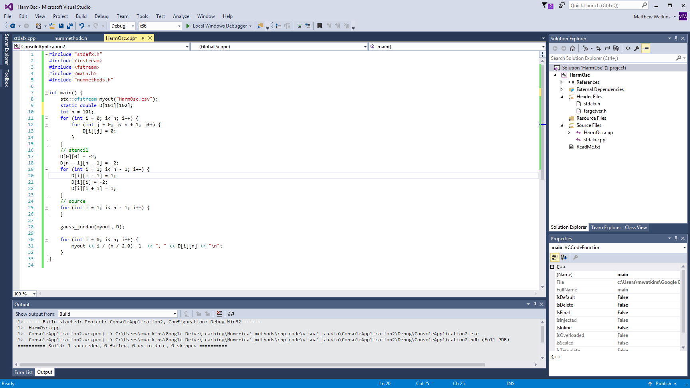
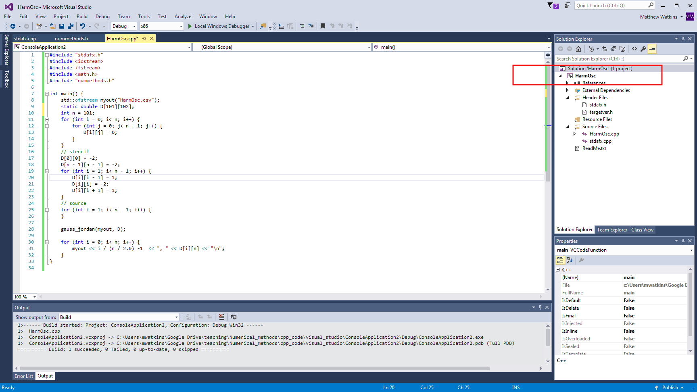
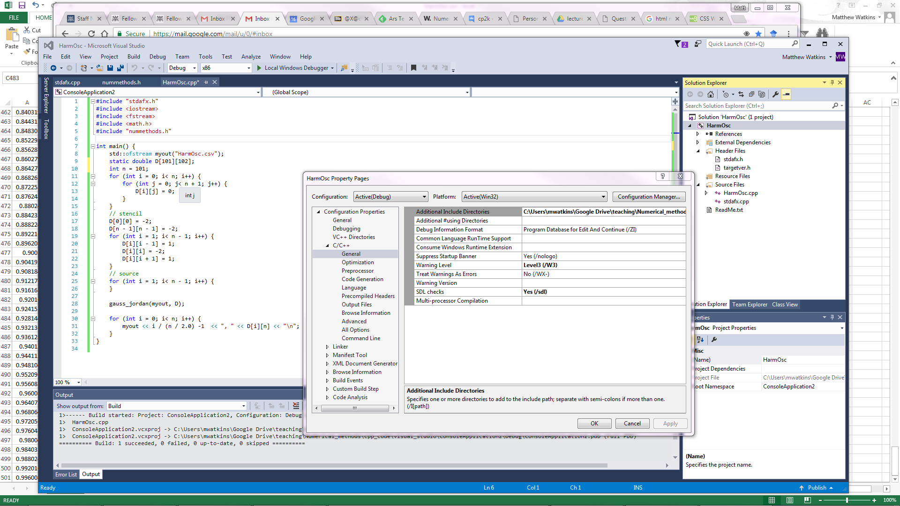
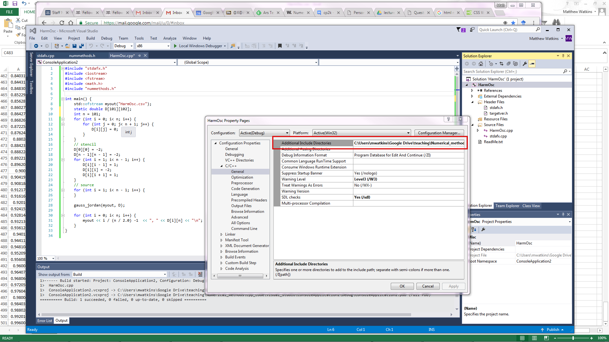
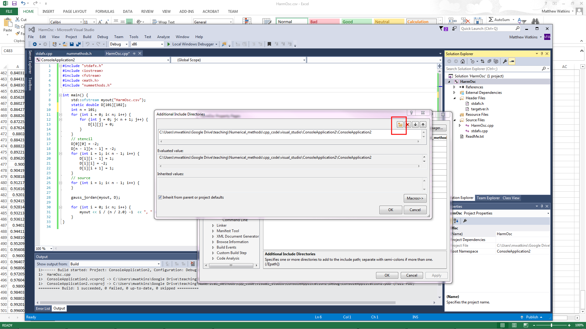
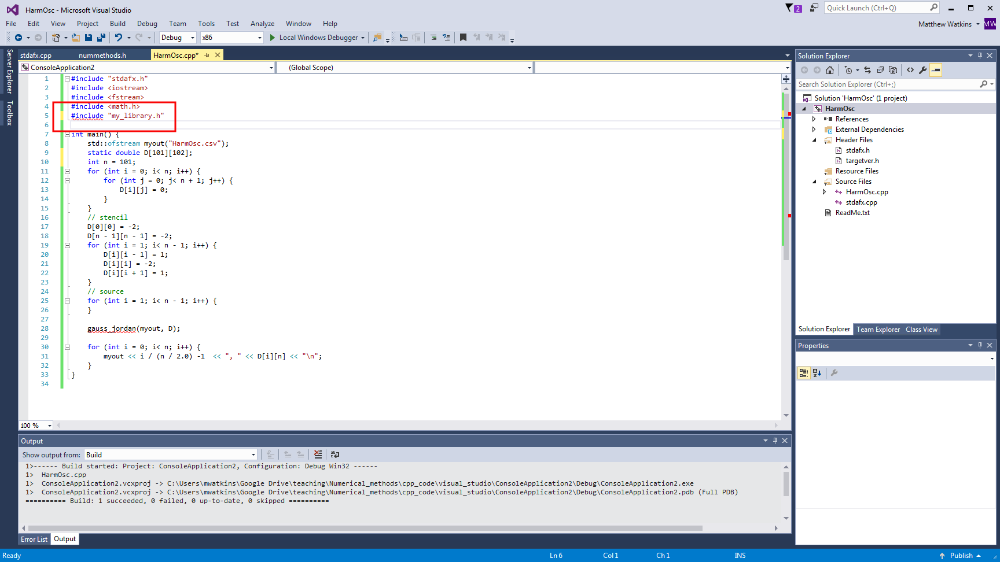
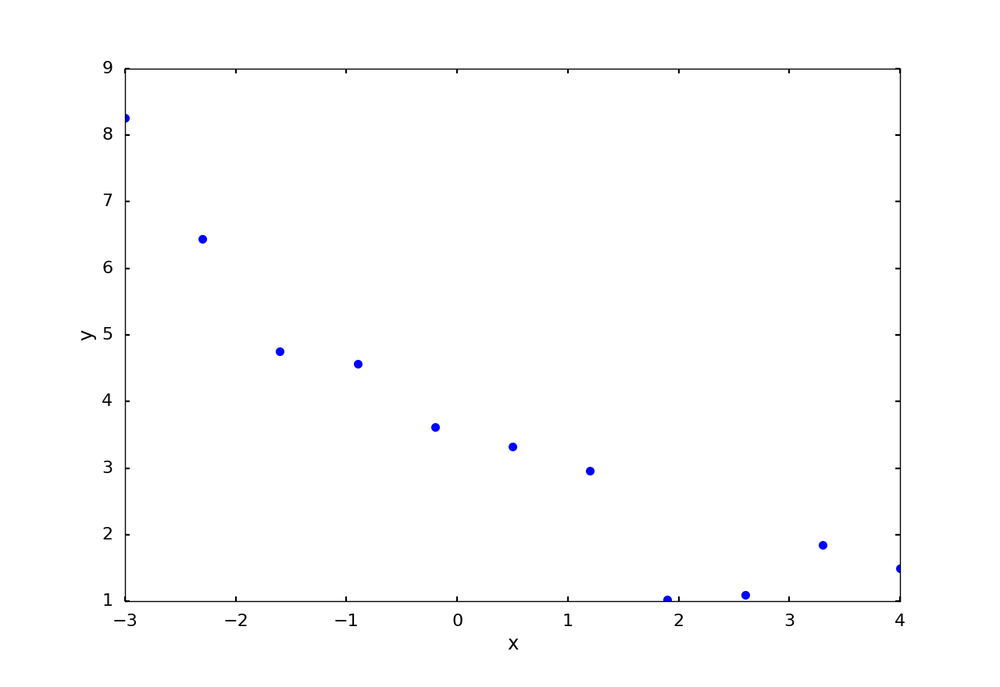
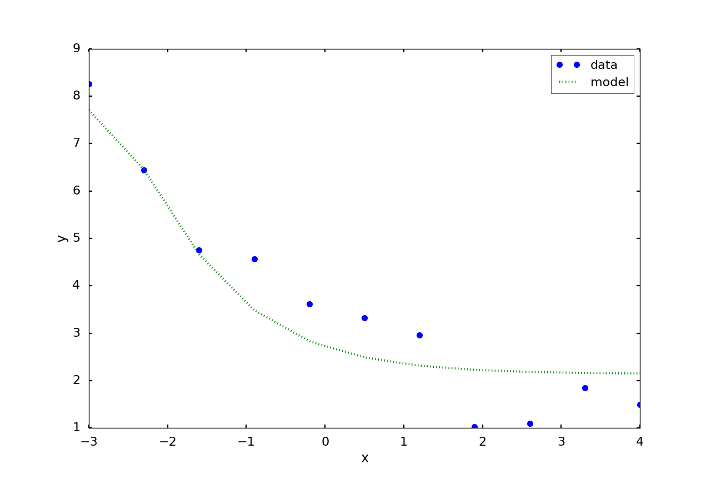

We continue with Curve Fitting. This week polynomial and multiple linear regression.
Reading: Capra and Canale, introduction to part 5 and chapter 17.
Learning outcomes:
You may dislike having lots of code / routines copied around everytime we reuse something
The solution is to $\textbf{include}$ other files or, generally, libraries.
We can make our own library file by copying functions other than main into a file called 'my_library.h'
|  |
|  |
This is my example project. Right click on the $\textbf{bolded}$ project name in the pane to right.
Then select properties.
A new window should have appeared, like this:
|  |
Open the C/C++ then the General tab
Then click on drop down button in the second column of the the 'Additional Include Directories' row and select edit
|  |
You should see something like this:
Click on the folder icon, and select the directory where you saved your 'my_library.h' file in
|  |
|  |
Now I can add a #include line in the file and use any functions in the library .
To include the Eigen library,
#include <iostream>
#include <Eigen/Dense>
using Eigen::Matrix2d;
using namespace std;
int main()
{
Matrix2d A, b;
A << 2, -1, -1, 3;
b << 1, 0, 0, 1;
cout << "Here is the matrix A:\n" << A << endl;
cout << "Here is the right hand side b:\n" << b << endl;
Matrix2d x = A.ldlt().solve(b);
cout << "The solution is:\n" << x << endl;
cout << A * x;
}
Here is some code to read in a matrix from a csv file. Assumes the header contains the number of rows then number of columns.
#include <iostream>
#include <Eigen/Dense>
#include <fstream>
#include <string>
using Eigen::MatrixXd;
using namespace std;
MatrixXd slurpData()
{
string nfile, temp;
int Ncol, Nrow;
cout << "Insert the name of the file containing the coefficient and the constant terms" << "\n";
cin >> nfile;
ifstream myFile(nfile);
// Read the size of the matrix
if (myFile.is_open()) {
cout << "\nopened file\n\n";
getline(myFile, temp, ',');
Nrow = stoi(temp);
cout << "found file: Nrows = " << Nrow << "\n\n";
getline(myFile, temp, '\n');
Ncol = stoi(temp);
cout << "found file: Ncols = " << Ncol << "\n\n";
}
MatrixXd a(Nrow, Ncol);
// Read the array
for (int i = 0; i < Nrow; ++i) {
for (int j = 0; j < Ncol - 1; ++j) {
getline(myFile, temp, ',');
a(i, j) = stod(temp);
cout << a(i, j) << ", ";
}
getline(myFile, temp, '\n');
a(i, Ncol - 1) = stod(temp);
cout << a(i, Ncol - 1) << "\n";
}
return a;
}
int main()
{
MatrixXd a;
a = slurpData();
cout << a.rows() << " " << a.cols();
}
In the case that the largest power of $x$ is $x^2$ we have $$ y_i (a_0, a_1, a_2; x_i) = a_0 + a_1 x_i + a_2 x_i^2 + e_i $$ and an overall error function $$ S_r (a_0, a_1, a_2) = \sum_{i=0}^{N-1} (y_i - a_0 - a_1 x_i - a_2 x_i^2)^2 $$
This leads to a set of equations \begin{align*} \frac{\delta S_r (a_0, a_1, a_2)}{\delta a_0} & \implies \left(n\right)a_0 + \left(\sum x_i\right) a_1 + \left(\sum x_i^2\right) a_2 & = \sum y_i \\ \frac{\delta S_r (a_0, a_1, a_2)}{\delta a_1} & \implies \left(\sum x_i\right) a_0 + \left(\sum x_i^2\right) a_1 + \left(\sum x_i^3\right) a_2 & = \sum x_i y_i \\ \frac{\delta S_r (a_0, a_1, a_2)}{\delta a_2} & \implies \left(\sum x_i^2\right) a_0 + \left(\sum x_i^3\right) a_1 + \left(\sum x_i^4\right) a_2 & = \sum x_i^2 y_i \\ \end{align*}
This leads to a set of equations \begin{align*} \frac{\delta S_r (a_0, a_1, a_2)}{\delta a_0} & \implies \left(n\right)a_0 + \left(\sum x_i\right) a_1 + \left(\sum x_i^2\right) a_2 & = \sum y_i \\ \frac{\delta S_r (a_0, a_1, a_2)}{\delta a_1} & \implies \left(\sum x_i\right) a_0 + \left(\sum x_i^2\right) a_1 + \left(\sum x_i^3\right) a_2 & = \sum x_i y_i \\ \frac{\delta S_r (a_0, a_1, a_2)}{\delta a_2} & \implies \left(\sum x_i^2\right) a_0 + \left(\sum x_i^3\right) a_1 + \left(\sum x_i^4\right) a_2 & = \sum x_i^2 y_i \\ \end{align*}
We can rewrite these equations as $$ \begin{pmatrix} \left(\sum x_i^0\right) & \left(\sum x_i\right) & \left(\sum x_i^2\right) \\ \left(\sum x_i\right) & \left(\sum x_i^2\right) & \left(\sum x_i^3\right) \\ \left(\sum x_i^2\right) & \left(\sum x_i^3\right) & \left(\sum x_i^4\right) \\ \end{pmatrix} \begin{pmatrix} a_0 \\ a_1 \\ a_2 \end{pmatrix} = \begin{pmatrix} \sum y_i \\ \sum x_i y_i \\ \sum x_i^2 y_i \end{pmatrix} $$
Which is of the form $\textbf{A}x = b$
Full code here
#include <iostream>
#include <Eigen/Dense>
#include <fstream>
#include <cmath>
#include <string>
using Eigen::MatrixXd;
using Eigen::VectorXd;
using namespace std;
MatrixXd slurpData()
{
string nfile, temp;
int Ncol, Nrow;
cout << "Insert the name of the file containing the coefficient and the constant terms" << "\n";
cin >> nfile;
ifstream myFile(nfile);
// Read the size of the matrix
if (myFile.is_open()) {
cout << "\nopened file\n\n";
getline(myFile, temp, ',');
Nrow = stoi(temp);
cout << "found file: Nrows = " << Nrow << "\n\n";
getline(myFile, temp, '\n');
Ncol = stoi(temp);
cout << "found file: Ncols = " << Ncol << "\n\n";
}
MatrixXd a(Nrow, Ncol);
// Read the array
for (int i = 0; i < Nrow; ++i) {
for (int j = 0; j < Ncol - 1; ++j) {
getline(myFile, temp, ',');
a(i, j) = stod(temp);
// cout << a(i, j) << ", ";
}
getline(myFile, temp, '\n');
a(i, Ncol - 1) = stod(temp);
//cout << a(i, Ncol - 1) << "\n";
}
return a;
}
double sumData(MatrixXd myData,int powX,int powY)
{
double sum = 0;
for (int i = 0; i < myData.rows(); i++) {
sum += pow(myData(i, 0), powX) * pow(myData(i, 1), powY);
}
return sum;
}
int main()
{
MatrixXd a;
a = slurpData();
//cout << a.rows() << " " << a.cols();
MatrixXd A(3, 3);
A(0, 0) = sumData(a, 0, 0);
A(0, 1) = sumData(a, 1, 0);
A(0, 2) = sumData(a, 2, 0);
A(1, 0) = sumData(a, 1, 0);
A(1, 1) = sumData(a, 2, 0);
A(1, 2) = sumData(a, 3, 0);
A(2, 0) = sumData(a, 2, 0);
A(2, 1) = sumData(a, 3, 0);
A(2, 2) = sumData(a, 4, 0);
cout << A << "\n\n";
VectorXd b(3);
b(0) = sumData(a, 0, 1);
b(1) = sumData(a, 1, 1);
b(2) = sumData(a, 2, 1);
cout << b << "\n\n";
VectorXd x(3);
x = A.ldlt().solve(b);
cout << x << "\n\n";
}
$\newcommand{\vect}[1]{\boldsymbol{#1}}$Simple linear, polynomial and multiple linear regression can be generalised to the following linear least-squares model $$ y_i = a_0 z_0 (x_i) + a_1 z_1 (x_i) + a_2 z_2 (x_i) + \cdots + a_{m-1} z_{m-1} (x_i) + e_i $$ can now not polynomials in $x$ but some predefined functions of those positions
$z_0(x), z_1( x), \ldots , z_{m-1}( x )$ are $m$ $\textbf{basis functions}$. The predefined basis functions define the model, only depend on the $x$ coordinate. I is called linear least squares as the parameters $a_0, a_1, \ldots, a_{m-1}$ appear linearly. The $z$s can be highly non-linear in $x$.
For instance. $$ y_i = a_0 \cdot 1 + a_1 \cos (\omega x_i) + a_2 \sin (\omega x_i) $$ fits this model with $z_0 = 1, z_1 = \cos(\omega x_0)$ and $z_2 = \sin(\omega x_0)$. Where $x$ is a single independent variable and $\omega$ is a predefined constant.
We can rewrite $$ y_i = a_0 z_0 (x_i) + a_1 z_1 (x_i) + a_2 z_2 (x_i) + \cdots + a_{m-1} z_{m-1} (x_i) + e_i $$ in matrix notation as $$ \vect{y} = \vect{Z} \vect{a} + \vect{e} $$ where bold lower case indicates a column vector, and bold uppercase indicates a matrix. $\vect{Z}$ contains the calculated values of the $m$ basis functions at the $n$ measured values of the independent variables: $$ \vect{Z} = \left[ \begin{matrix} z_0 (x_0) & z_1 (x_0) & \cdots & z_{m-1} (x_0) \\ z_0 (x_1) & z_1 (x_1) & \cdots & z_{m-1} (x_1) \\ \vdots & \vdots & \ddots & \vdots \\ z_0 (x_{n-1}) & z_1 (x_{n-1}) & \cdots & z_{m-1} (x_{n-1}) \\ \end{matrix} \right] $$
The column vector $\vect{y}$ contains the $n+1$ observed values of the dependent variable $$ \vect{y}^T = \left[y_0, y_1, y_2, y_3, \ldots, y_{n-1} \right] $$ The column vector $\vect{a}$ contains the $m+1$ unknown parameters of the model $$ \vect{a}^T = \left[a_0, a_1, a_2, \ldots, a_{m-1} \right] $$ The column vector $\vect{e}$ contains the $n+1$ observed residuals (errors) $$ \vect{e}^T = \left[e_0, e_1, e_2, e_3, \ldots, e_{n-1} \right] $$
We can also express error in our model as a sum of the squares much like before: $$\begin{align*} S_r & = \sum_{i=0}^{n}\left(y_i - \sum_{j=0}^{m} a_j z_{ji} \right)^2 \\ & = \sum e_i^2 = \vect{e}^T \vect{e} = (\vect{y} - \vect{Z} \vect{a})^T (\vect{y} - \vect{Z} \vect{a}) \end{align*}$$ $S_r$ is minimised by taking partial derivatives wrt $\vect{a}$, which yields $$ \vect{Z}^T \vect{Z} \vect{a} = \vect{Z}^T \vect{y} $$ which is exactly equivalent to the set of simultaneous equations for $a_i$ we found previously when fitting polynomials. More details can of the derivation can be found here, though the notation is a little different.
This set of equations is of the form $\vect{A} \vect{x} = \vect{b}$ and can be solved using gauss elimination or similar method.
Try to redo the earlier fitting problems in this notation / method.
Suppose we have 11 measurements at $$ x^T = [-3. , -2.3, -1.6, -0.9, -0.2, 0.5, 1.2, 1.9, 2.6, 3.3, 4.0] $$ with measured values $$ y^T = [8.26383742, 6.44045188, 4.74903073, 4.5656476 , 3.61011683, 3.32743918, 2.9643915 , 1.02239181, 1.09485138, 1.84053372, 1.49110572] $$ 
Let us fit it to a model of the form $y_i = a_0 \cdot 1 + a_1 e^{-x_i} + a_2 e^{-2x_i} $
Our $\vect{Z}$ matrix has 3 columns for the basis functions $z_0 (x_i) = 1$, $z_1 (x_i) = e^{-x_i}$ and finally $z_2 = e^{-2x_i}$. It will have 11 rows corresponding to the 11 measurements.
Z =
[
[ 1.00000000e+00, 2.00855369e+01, 4.03428793e+02],
[ 1.00000000e+00, 9.97418245e+00, 9.94843156e+01],
[ 1.00000000e+00, 4.95303242e+00, 2.45325302e+01],
[ 1.00000000e+00, 2.45960311e+00, 6.04964746e+00],
[ 1.00000000e+00, 1.22140276e+00, 1.49182470e+00],
[ 1.00000000e+00, 6.06530660e-01, 3.67879441e-01],
[ 1.00000000e+00, 3.01194212e-01, 9.07179533e-02],
[ 1.00000000e+00, 1.49568619e-01, 2.23707719e-02],
[ 1.00000000e+00, 7.42735782e-02, 5.51656442e-03],
[ 1.00000000e+00, 3.68831674e-02, 1.36036804e-03],
[ 1.00000000e+00, 1.83156389e-02, 3.35462628e-04]]
Then we set up the linear equation problem by forming $\vect{Z}^T \vect{Z}$
ZTZ =
[
[ 1.10000000e+01, 3.98805235e+01, 5.35475292e+02],
[ 3.98805235e+01, 5.35475292e+02, 9.23382518e+03],
[ 5.35475292e+02, 9.23382518e+03, 1.73292733e+05]]
and $\vect{Z}^T \vect{y}$
ZTy =
[ 39.36979777, 272.62352738, 4125.63079852]
The solutions of this problem are
a = [ 2.13758951, 0.58605735, -0.01537541]
This means that our final model for the data is
$$
y = 2.13758951 + 0.58605735e^{-x} - 0.01537541e^{-2x}
$$

The matrix $(\vect{Z}^T \vect{Z})^{-1}$ contains the variance (diagonal elements) and covariances (off-diagonal elements) of the $a_i$ so can be used to estimate the accuracy of the parameter estimation.
We can use the Gauss Jordan method to find $(\vect{Z}^T \vect{Z})^{-1}$.
The diagonal elements of $(\vect{Z}^T \vect{Z})^{-1}$ can be designated as $z_{i,i}^{-1}$
We will call the standard error of our fitted model to the data $s_{y/x} = \frac{1}{\sqrt{n-m}}\sqrt{\sum_{i=0}^{i=n-1} [ y_i - (a_0 z_0 (x_i) + a_1 z_1 (x_i) + a_2 z_2 (x_i) + \cdots + a_{m-1} z_{m-1} (x_i)) ] ^2}$
The variances of our parameters are given by $\text{var}(a_i) = s^2(a_i)= z_{i,i}^{-1} s_{y/x}^2$
We can now place error limits on our optimal parameters, $a_0, ... a_{m-1}$.
If our model is good, the real data should be approximately normally distributed around our model
You can then show that the parameters should have a t-distribution with $n-2$ degrees of freedom.
We can put confidence limits on the parameters using $P(\text{true value of the ith parameter is in the interval } (a_i - t_{c/2,n-2} s(a_i) , a_i + t_{c/2,n-2} s(a_i) ) = c$ where $c$ is our confidence, for instance 0.95 to be 95% certain the parameter lies within those bounds and $t_c$ are the critical values for the appropriate t distribution.
Perform a fit to the following data.
x = {
10.00,
16.30,
23.00,
27.50,
31.00,
35.60,
39.00,
41.50,
42.90,
45.00,
46.00,
45.50,
46.00,
49.00,
50.00
}
|
y = {
8.953,
16.405,
22.607,
27.769,
32.065,
35.641,
38.617,
41.095,
43.156,
44.872,
46.301,
47.490,
48.479,
49.303,
49.988
}
|
Remember to break the problem down into smaller ones:
You should be reading additional material to provide a solid background to what we do in class
Reading: Capra and Canale, introduction to part 5 and chapter 17.
Lots of details inchapters 14 and 15 of Numerical Recipes.